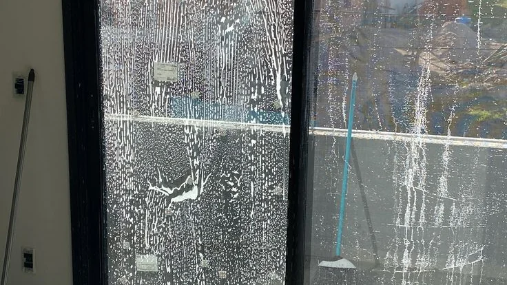
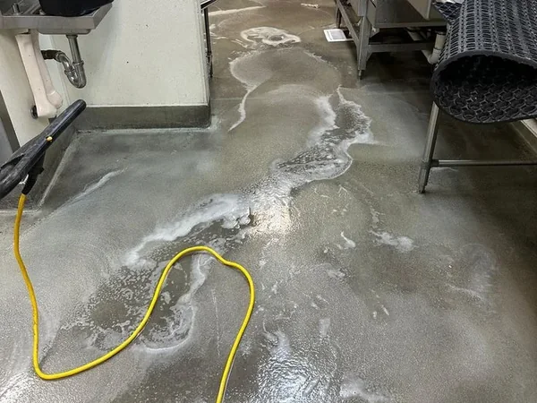
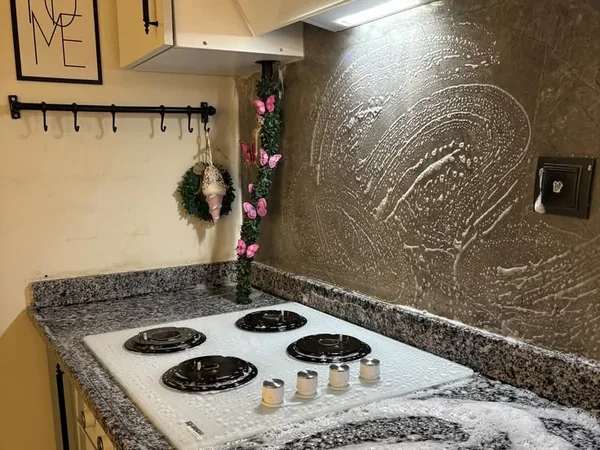

01 Nettoyage
Un intérieur impeccable, sans y penser
Chaque semaine ou pour un grand nettoyage, nos équipes prennent en charge tout l'entretien de votre logement, pièce par pièce, avec le soin qu'on mettrait chez soi.
Ce que nous faisons
- Sols : aspiration, lavage et dépoussiérage de toutes les pièces
- Cuisine : plans de travail, électroménager et placards
- Salle de bain et sanitaires détartrés
- Vitres, châssis et miroirs
- Nettoyage de fin de bail ou après travaux


